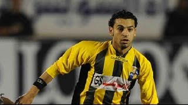
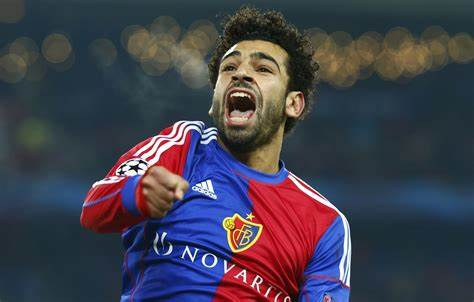
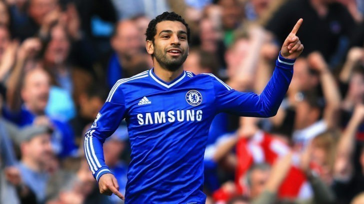
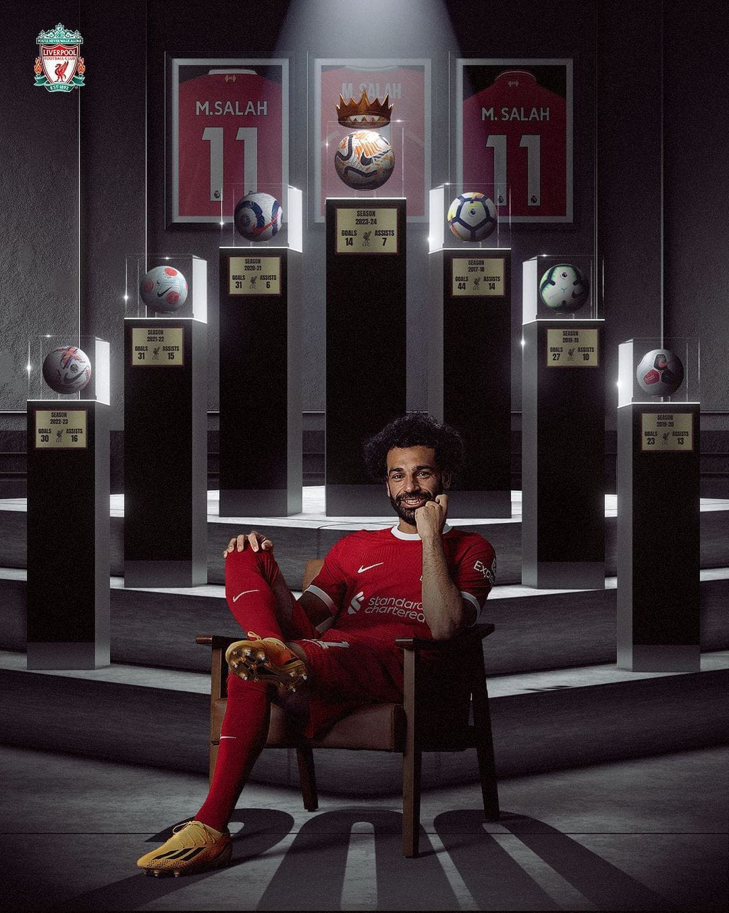

|  |
MO SALAH WITH El MOKAWLOON
picture by google |
Semasa kecil, Salah tak terlalu pandai dalam bidang akademik. Menyusul hal tersebut, Salah mencoba mencari hal yang bisa menutupi kekurangan nya itu hingga pada akhirnya Salah menemukan kecintaannya pada sepakbola. Tak mampu berkembang dalam bidang akademik, Salah terus mengasah kemampuannya dalam mengolah si kulit bundar.
Hari-harinya diisi dengan menonton pertandingan sepakbola di televisi. Saat itu, ia mengidolakan beberapa pesepakbola asal Arab. Dirinyapun terus mengasah kemampuannya dalam bermain bola.
Salah kecil tak hanya bermain bola di lapangan atau di jalan-jalan yang sepi penuh debu, tapi juga di kompetisi-kompetisi lokal. Salah satu kompetisi yang diikutinya adalah Liga Pepsi, sebuah kompetisi sepak bola untuk anak-anak.
Kompetisi ini digelar di Kota Tanta, sekitar 30 menit perjalanan darat dari Desa Nagrig. Meski saat itu tubuhnya kurus dan tak terlalu tinggi, Salah sangat lincah dan lihai dalam memainkan bola.
Permainannya yang atraktif memukau seorang pencari bakat dari klub sepak bola Contractors FC, El Mokawloon, yang bermarkas di Kairo. Saat itu juga, pencari bakat ini langsung menawarkan kontrak untuk Mo Salah. Salah pun bergabung dengan akademi klub lokal El Mokawloon. Jarak yang tidak dekat dari rumahnya membuat Salah harus berganti beberapa bus agar bisa mencapai tempat latihannya itu.
Masa remaja Salah habis untuk sepakbola. Jadwal latihan yang padat plus perjalanan panjang yang harus ditempuhnya untuk berlatih membuat Salah tak punya cukup waktu untuk bermain bersama teman-teman sebayanya.
Akan tetapi, ia cukup tabah untuk itu. Sebab Salah menyimpan mimpi menjadi pemain sepakbola dunia.
Pada Mei 2010, di usianya yang menginjak 18 tahun, dirinya mulai diangkat ke level senior klub akademinya tersebut. Di awal karir professionalnya, Salah hanya bermain sebagai pemain pengganti. Namun seiring berjalannya waktu, permainan nya di level senior terus meningkat dan ia berhasil masuk kedalam skuat utama. Sekitar tahun 2012, pria Mesir ini sempat dibuat bimbang oleh kompetisi Mesir yang terhenti karena kericuhan.
|  |
MO SALAH WITH BASEL FC
picture by google |
Hal tersebut membuatnya hengkang ke Eropa. Saat itu, yang bersedia untuk menawarkan kontrak adalah kulb asal Swiss, FC Basel. Pada bulan April 2012, Salah menandatangani kontrak 4 tahun dengan Basel. Di tahun yang sama, ia langsung memulai debutnya dengan bermain di Liga Champions Eropa dan UEFA Europa League.
Di musim 2012/13, Salah memiliki peran penting di FC Basel dalam mengarungi kompetisi Liga Swiss dan Piala Swiss. Di musim selanjutnya, Salah berhasil membawa FC Basel dalam memenangi gelaran Uhren Cup.
Hingga pada akhirnya pada Januari 2014, Mo Salah mengesankan pencari bakat Chelsea dan ia bersedia untuk pindah ke klub asal kota London tersebut.
|  |
MO SALAH WITH CHEALSEA FC
picture by google |
Pada Februari 2014, Salah memulai debut bersama Chelsea saat melawan Newcastle United. Pada musim 2014/15, Salah harus kembali ke Mesir untuk mengikuti wajib militer. Akan tetapi, pemerintah Mesir membebastugaskan Salah dari wajib militer karena ia dianggap sebagai pahlawan dalam bidang keolahragaan.
Tepat pada Februari 2015, Chelsea meminjamkan Salah ke klub Italia, Fiorentina, sebelum akhirnya ia memulai karir cemerlangnya bersama klub Serie A lainnya, yaitu AS Roma.
.jpeg) |
MO SALAH WITH AS ROMA
picture by google |
Setelah kurang beruntung bersama Chelsea, pria Mesir ini seolah menemukan kembali performa terbaiknya saat bergabung dengan AS Roma.
Bersama Serigala Roma, Salah berhasil menyabet gelar pemain terbaik dan pencetak gol terbanyak dengan mengoleksi 15 gol. Menyusul performa terbaiknya, pada 2016, Roma menyodorkan kontrak permanen kepada Mo Salah.
|  |
MO SALAH WITH LIVERPOOL FC
picture by Liverpool fc |
Kemampuannya yang semakin meningkat membuat beberapa klub tertarik kepada pemain asal Mesir ini. Dan tepat pada Juni 2017, Salah tidak bisa menolak tawaran dari Liverpool. Dirinya pun digaet Liverpool dengan mahar 50juta paun.
Bergabung dengan The Reds membuat Mo Salah menjadi pemain Mesir pertama yang berseragam Liverpool. Salah mencetak gol debut melawan Watford dan dinobatkan sebagai pemain terbaik Liverpool pada Agustus 2017.
Salah seolah tak terhentikan bersama Liverpool, ia sukses menyabet gelar top skor dan menjelma menjadi salah satu striker paling ganas di Liga Primer Inggris, bahkan Eropa.